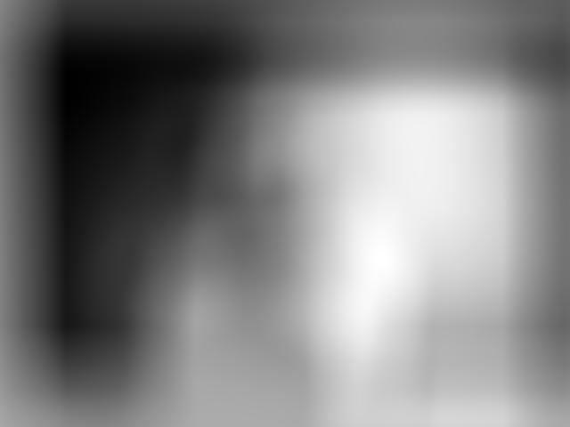
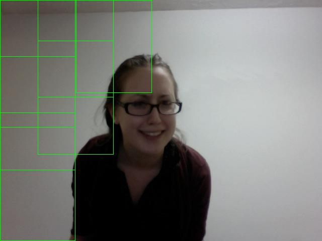

CS 4501: Computer Vision
Homework Assignment #2
Tom Crossland (tcc4dr)
Beginning Questions
Question 1
Suppose you have a bunch of points in 3-D. These points are in a 3-D point cloud.
Between every two points, find a plane of symmetry. This plane will
be halfway between the selected points and perpendicular to the plane connecting them.
Transform these planes of symmetry into lines using the Hough transformation.
Effectively, every two points are "voting" its potential plane of symmetry found.
After all points have been processed, look at the Hough transformation.
The converted planes with the most votes as determined by the Hough transformation are now considered planes of symmetry.
Question 2
Suppose you are trying to find a k that minimizes the summation of (S_k+i - T_i)^2 from i = 1 to length(T).
Recall that the definition of a discrete convolution in one dimension is the summation of f_i*Shift(g,i).
For the j-th element in the result, it is the summation of g_j-i*f_i.
Expand the SSD formula, so it now is the summation of (S_k+i^2 - 2*S_k+i*T_i + T_i^2). This can be reduced the sum of two convolutions and a constant. The first term is simply the elements of S
squared convolved onto a mask of ones of size T.
By definition, this will produce the sum of the sum of the k-th through k+length(T) elements of S squared.
The second term is just S convolved with a flipped version of T to account for the element by element way convolution is performed.
The -2 can be applied later since it is a constant value and has no affect in the order in which it is applied.
The T_i^2 term will just be a constant throughout the summation since it is the dot product of T with itself.
Therefore, you find the vector of SSD values by performing this equation:
conv(S.^2,ones_mask) + -2*conv(S,T) + dot(T,T) with T being flipped
Question 3
To find the largest eigenvalue, use the power iteration method. Start out with a random vector called b_0.
Choose a random vector b_0 to start the iteration.
Find b_k+1 for any given b_k by multiplying the matrix A by b_k and normalizing it. You are basically iteratively
calculating Ab, A^2b, A^3b, and so on. Suppose the eigenvalues are sorted in decreasing order (i.e. A*v_1 = y_1*v_1).
Every iteration scales the component of b in v_1's direction by y_1.
After some iterations, multiplying the matrix by the vector will converge to the most dominant eigenvector.
This is because the repeated multiplication of the matrix A will increase the components of the most
significant eigenvector and decrease the components of the others.
After the vector changes by below some threshold, one can estimate if it has converged or not.
This technique cannot be applied to matrices that have repeated eigenvalues for different eigenvectors.
This could have many real world applications, especially in the field of computer vision.
In corner detection, this algorithm could be used to compute the largest eigenvector and value of the covariance matrix.
Additionally, this method is used by Google to compute page ranks of documents being searched.
This provides an efficient way to calculate the maximum eigenvector of matrices as sparse as a web matrix.
To find the second most dominant eigenvector, project the most dominant unit eigenvector and subtract it.
This effectively removes it. Now the previously second most dominant eigenvector of the matrix will be most dominant
eigenvector of the modified matrix. Perform the iteration algorithm on it to get the previously second most
dominant eigenvector. Repeat these steps to get the third most dominant eigenvector.
Aligned database of faces
I wrote two Matlab scripts to create the aligned database of faces and average face.
The first, align.m, produced versions of the input images aligned in the same manner.
The second, avgFace.m, took the aligned database of faces and computed the average face of the database.
align.m takes in two parameters: min and max.
My program assumes that all images that need to be aligned are .jpg's and in a subdirectory named 'facedb'.
It also assumes that these images have consecutive non-negative integers as file names (i.e. 0.jpg, 1.jpg, 2.jpg, etc.).
The parameter min represents the file name sans file extension of the first image you want to align.
The parameter max represents the file name sans file extension of the last image you want to align.
Therefore, the program will align images between and including min.jpg and max.jpg.
The program cycles through each image to align and displays it.
The user is prompted to click the center of the subject's eyes.
The user must click the left-hand side eye of the subject first and then enter it.
Then the user must procede to click the right-hand side eye of the subject and then enter it.
The selected coordinates of the two eyes are saved.
The image is warped so the centers of the eyes are 100 pixels apart.
Next, the program crops the warped image so that the output image is 300 pixels tall by 200 pixels wide.
The cropping is done so that the eyes are midway in the height of the image.
I chose to do this because the eyes in a normal human face are roughly at the midpoint of the face heightwise.
I chose to crop the pictures to a size of 300x200 since doing so provided a good field of view of the face
while including many facial details and eliminating most of the negligable background.
Once the image is aligned and cropped, the aligned faces are stored in a subfolder of the main working directory called 'aligned'.
Below are some examples of aligned and cropped images from the database of faces.
0.jpg
Original image

Aligned and cropped image

48.jpg
Original image

Aligned and cropped image

65.jpg
Original image

Aligned and cropped image

avgFace.m takes in two parameters: min and max.
My program assumes that all aligned images that need to be averaged are 400x400 .jpg images and are in a subdirectory named 'aligned'.
It also assumes that these images have consecutive non-negative integers as file names (i.e. 0.jpg, 1.jpg, 2.jpg, etc.).
The parameter min represents the file name sans file extension of the first image you want to average.
The parameter max represents the file name sans file extension of the last image you want to average.
Therefore, the program will average images between and including min.jpg and max.jpg.
First, I created a 3 dimensial matrix of zeros the same size as the cropped aligned images with a depth of 3.
The depth of 3 is because the program deals with RGB images.
This depth allows for the average intensities of red, green, and blue for data set to be calculated at each pixel.
This will produce an average face as an RGB image.
To find the average color intensities at each pixel, I looped through each image being averaged and multiplied it by a scaling factor.
The scaling factor is 1/n where n is the number of images being averaged.
I proceeded to add these scaled down intensities to the running sum of intensities at each pixel.
After doing this for all images to be averaged, the image with average color intensities is produced and saved in the 'aligned' subdirectory.
The following is the average face as calculated for aligned images 0.jpg through 68.jpg.
average.jpg

Face detection
My face detection was written as a Matlab script, detect.m. detect.m takes 3 parameters: file, tau, and scale.
file is the file name of the target image to detect faces in.
The program assumes that the target image is located in the subdirectory named "target."
tau is the minimum threshold of the standardized SSD used to detect pixels that could be the center of faces.
scale is a double representing how much you want to scale the template by when trying to detect faces in the target image.
I allowed the user to manually alter the scale size to hopefully yield better detection results.
The user could eye-ball approximately how much they need to scale the template based on given faces in the target.
Doing this also simplifies comparison with the tau value since the tau will not need to change due to finding SSDs
over smaller template areas.
However, there are some drawbacks to this implementation as opposed to automatically detecting faces using 100%, 75%,
50%, and 25% filters. The main is that it becomes much harder to detect faces at different distances from the camera.
Given a small scaled template, the program is more likely to detect smaller faces in the background than larger faces in the foreground.
The opposite is true as well. Despite this flaw, I decided to implement my detector with the scaling parameter anyways.
First, the program reads in the template image in. In my face detector, this is the average face in the 'aligned' subdirectory.
This file name is hardcoded in for simplicity's sake.
The program then loads the target image in the "target" subdirectory.
The program then converts that image into a double matrix and normalizes it by dividing the values by 255.
Since the image is represented by a 3 dimensional matrix with values ranging from 0 to 255 for each color intensity,
normalizing it makes all the values between 0 and 1. This makes comparing multiple intensities easier and
will decrease the range of possible SSD values.
The program then loads the individual R, G, and B intensity components of the target image into three separate matrices.
The same normalization and division process is applied to the template image.
For each color intensity matrix for the target image, I found the SSD between that and its corresponding color intensity matrix of the template matrix.
To calculate the SSD between associated color intensity matrices of the target and template images, I wrote
a separate Matlab function called getSSD. getSSD takes two parameters, S and T. S is the target matrix and T
is the template matrix. Let T have dimensions smaller than or equal to S. Because of the properties of convolution,
To dot multiply the correct elements in the transformed padded matrices to get part of the SSD,
I had to rotate the template matrix by 180 degrees. In Question 2, I determined the
relationship between SSD and convolution. Therefore, I had to perform a convolution between S and -2*T,
perform a convolution between S.*S and a mask of ones of size T, and find the sum of all the elements of T squared.
Summing these three components would give the SSD at each pixel as if the template were applied
with said pixel at the center of the template.
To speed up the program, I decided to use fast Fourier transforms to compute the convolutions. In order to do that,
the matrices needed to be padded with zeros so their dimensions are powers of two. Because the template will be applied
around the edges of the target image, I had to make sure that the target was padded with zeros of the same dimensions
of the template image in each given direction. The program then found the next highest power of two that could account for
this safety buffer and padded each side so the final dimensions of the matrix were powers of two. To do this, I had to divide
the total amount to pad by two and pad the matrix with this many zeros in the given directions. After the program pads the target with zeroes,
the program pads the template so its dimensions match the dimensions of the padded template.
Before Fourier transforming the padded S matrix, I had to apply an fftshift on it to produce more accurate results.
After Fourier transforming the matrices, I element-wise multiplied the necessary transformed matrices to perform
convolution in the Fourier domain. I inverse fft'd the results and added them together along with the sum of
the elements of T squared to create a matrix of SSD values. This produced a matrix of SSD values where the element
in the matrix represented the SSD as if the template was applied to the target image with said element being the center
of the template. However, the SSD matrix is padded with zeros in the same manner S was. SSD needed to be depadded and returned.
For each color intensity matrix for the target image, I found the SSD between that and its corresponding color intensity matrix of the template matrix.
To create more readible results, I normalized the values of the intensity SSDs so they would be between 0 and 1.
I then averaged the three intensity SSD matrices to get the average SSD matrix. These numbers would thus be between 0 and 1.
I decided to output this matrix as a gray scale image. In the image, the more black the pixels are, the lower the standardized average SSD at that pixel is.
The opposite is true the more white the pixel is. Therefore, regions of blackness correspond to the centers of possible faces.
I looped through all elements in the SSD matrix and compared each element to the tau threshold.
If its value was below the threshold, I flagged it as being a possible center of a face. To do this, I created a matrix of all zeros
with the same dimensions as the SSD matrix. I changed a pixel's corresponding value in this flag matrix to one if
its SSD value was less than tau. I decided to use this flag matrix even though it took up extra memory because it is significantly faster
than to store all possible "face" points in an always changing size vector. Once I got all "face points" I performed non-maximal suppression to
suppress all non-maximal points in a given neighborhood with dimensions of the template. Once non-maximal "face points" are suppressed,
the program draws a box with dimensions of the template around the "face points" given that a "face point" is the detected center of a face.
I made various templates and target images using an image editor make sure
my detection algorithm was inherently correct.
Template: temp.jpg

Input Values: filename = "sq1.jpg" tau = 0.1, scale = 1
Target Image

Possible Face Points

Detected Image

Template: otemp.jpg

Input Values: filename = "o2.jpg" tau = 0.1, scale = 1
Target Image

Possible Face Points

Detected Image

Template: shtemp.jpg

Input Values: filename = "sh1.jpg" tau = 0.1, scale = 1
Target Image

Possible Face Points

Detected Image

To do a sanity check on my detection program, I created various templates and target images.
I hardcoded in the filenames of the templates .
The first template I created was a black square off-centered upwards.
For the target image, I copied said square onto a large white background and translated it.
As the pictures indicated, the pixel were the lowest SSD was at the center at the moved template on the target image.
The same results were seen with a similar template of an off centered orange square. The target image had two orange squares and a blue square.
The program was able to detect the orange squares and did not detect the blue square.
This proved that the color of the shapes being detected really matter.
In addition, this proved that multiple objects could be detected in a target image if they are in separate "neighborhoods."
My final test template was an orange triangle. My target image was various colored shapes including the orange triangle on a white background.
The program was able to detect the orange triangle in the target image. This showed that the program could detect objects with various
other different objects in the background.
Once I achieved these results, I went on try to detect faces in the unaligned, uncropped photos in the face database.
Target Image: 41.jpg

Input Values: tau = 0.04, scale = 1
Possible Face Points

Detected Image

Input Values: tau = 0.4, scale = 0.6
Possible Face Points

Detected Image

Input Values: tau = 0.2, scale = 1
Possible Face Points

Detected Image

Input Values: tau = 0.04, scale = 0.6
Possible Face Points

Detected Image

The pictures above indicate how the different parameters affect the ability to detect faces.
Because tau is a minimum threshold, raising it would increase the number of possible "face points" detected.
For example, with scale of 0.6, when tau was 0.4, it returned much more detected faces than when tau was 0.04.
When scale was 1 and tau was 0.04, the minimum SSD was not below the threshold.
This explains why no faces were detected in this instance.
In addition, the scale parameter also has an effect on the face detection.
The larger the scale is, the bigger the template will be.
The bigger the template, the more elements you will sum over to produce SSD's.
Therefore, the tau value must be adjusted accordingly when doing this process.
The final image represents the best detected face area I found for the picture.
In the possible "face points" picture, there is a dark black area near the center of the face,
indicating that corresponding area in the original picture is likely to be the center of a face.
The center of the box is directly between the eyes, fulfilling the same property as the average face template I made.
The following are results on other uncropped, unaligned pictures from the class dataset.
Target Image: 28.jpg

Input Values: tau = 0.1, scale = 0.8
Possible Face Points

Detected Image

Target Image: 29.jpg

Input Values: tau = 0.1, scale = 0.8
Possible Face Points

Detected Image

With the appropriate parameter values, the program was able to detect the subject's face in both
a picture in which he was smiling and one in which he was not. The center of the detected faces is
approximately between the eyes of the subject, indicating a good match with the template image.
The possible "face points" with minimal SSD's are located near the center of the face as seen above.
These results along with the previous ones indicate that the face detector detects faces that were used
in computing the average face extraordinally well.
Next, I decided to test my faces not used in compiling the average face.
Target Image: beatles.jpg

Input Values: tau = 0.2, scale = 0.4
Possible Face Points

Detected Image

Target Image: sheen.jpg

Input Values: tau = 0.1, scale = 1
Possible Face Points

Detected Image

Target Image: sheen-with-girl.jpg

Input Values: tau = 0.2, scale = 0.4
Possible Face Points

Detected Image

Input Values: tau = 0.4, scale = 0.4
Possible Face Points

Detected Image

Target Image: britt.jpg
Input Values: tau = 0.2, scale = 0.75
Possible Face Points

Detected Image

My face detector did somewhat well when applied to images of people not in our class and used in constructing the average face.
Using the correct scales and thresholds, I was able to detect all four members of the Beatles in 'beatles.jpg'
and Charlie Sheen's face in 'sheen.jpg.' The detected face was centered almost between each person's eyes.
The minimal SSD/"face points" image indicated the same result.
However, the program did not do well at detecting faces in the last two input images.
In 'sheen-with-girl.jpg', with a relatively low threshold, the program was able to identify Charlie Sheen's face
but not that of his mistress. In addition, it returned many false positives, especially in Charlie's suit.
Raising the threshold allowed for the girl's face to be detected.
In addition, the program was unable to detect the girl's face present in 'britt.jpg.'
Instead, it returned many false positives of the cream colored wall, probably due to the wall's skin-like color.
There are many possible reasons for this. The picture was taken with a low quality webcam.
The contrast seems off, distorting the true color intensity of the "real" image.
Additional noise might have been introduced in the picture.
In addition, the girl's eyes are somewhat blocked by her glasses. Since our average face has distinct eyes
because of how it was aligned, this could have yieled a problem in trying to find eyes in order to find a face.
When you think about it, our algorithm isn't really looking for a face - it is instead looking for eyes with blurred face-like features
around them. If the program cannot find eyes, it is not as likely to find a face.
Target Image: 1.jpg

Input Values: tau = 0.09, scale = 0.2
Possible Face Points

Detected Image

Target Image: 4.jpg

Input Values: tau = 0.09, scale = 0.2
Possible Face Points

Detected Image

As you can see, the face detector detected many false positives in its search.
These false positives seemed to occur in three general areas: lighting hitting the padded wall,
the ceiling tiles, and the wood of the desks. This is most likely because these areas are somewhat
skin colored. When looking for a scaled down template in a target image, some of details of the
template are lost. This loss of detail in the template would result in a more blurred average face
with less recognizable facial features. Therefore, when looking for a face this way, the more
'skin colored' and blurred objects will be wrongly identified as a face.
There are some false negatives returned as well. It was able to detect many of
the students' faces when they are facing forward. This is because we only use one average face template
which is directly looking at the camera. This algorithm makes it nearly impossible to detect faces that are
not straight on.
Answers to Face Detector Questions
1. How well does your detector work? How would you evaluate its performance in a principled way (i.e., how would you scientifically compare multiple face detectors)?
See discussion for all images used above.
To evaluate its performance in a principled way, one use human computing.
Give a large group of humans the same pictures as inputted into the program and have them manually box where they think faces are.
Compute the average of faces detected by the humans. Now run the program on input data and compare where it detected faces to where the average human detects faces.
The smaller the difference is, the more likely the program is more accurate at detecting faces.
2. Is there significant difference in its accuracy when applied to images of people not in our class and thus not included in the construction of the template?
See discussion on the results of images 'beatles.jpg', 'sheen.jpg', 'sheen-with-girl.jpg', and 'britt.jpg'.
3. What types of false positives does it return (i.e. what image regions tend to resemble your face template)?
See discussion on the results of images 'sheen-with-girl.jpg', 'britt.jpg', '1.jpg', and '4.jpg'.
4. How might you automate the alignment/cropping stage from before for a huge collection of face images using this detector? How would you create your template?
One possible solution is to create an eye detector.
For your template, average together many colored and cropped images of eyes.
Have the program detect eyes in each facial picture.
The two minimal SSD points should correspond to the center of the eyes.
You now have the points of the center of the eyes in the facial image.
Warp and crop the image as explained above to create an aligned and cropped face.
Once all facial pictures are aligned and cropped, average them as I previously demonstrated in avgFace.m.
Eigenfaces
The first five eigenfaces as calculated in the program are as follows:
First Eigenface

Second Eigenface

Third Eigenface

Fourth Eigenface

Fifth Eigenface

The first eigenface seems to be bright around the skin of the face. This perhaps differentiates skin intensity
between pixels. The second eigenface seems to be bright around potential area were glasses are and for hair.
This perhaps differentiates glasses or hair type. The third eigenface seems to be bright on the forehead.
This perhaps corresponds to whether or not the person has bangs or a bare forehead. The fourth eigenface
had bright patches near the lips and by facial lines. This could perhaps differentiate the type of lips
people have and any notable facial lines. Finally, the fifth eigenface has bright spots around the eyesockets.
This could differentiate the depth of a person's eyes.
Here is the scatter plot of the projection of each face image onto the first two principal components

Here is the scatter plot of the singular values

Looking at the graph for the singular values, the eigenvalues drop off fairly quickly in an exponential decay pattern.
However, these values start to even out around the 30th eigenvalue.
This indicates that number of principal components that you would use to form a compact and accurate representation of your face database is about 30.
Instead, choose an arbitrarily larger number of principal components. For this case, let that number be 30 since it is much larger than 2.
Let v = a_1*e_1 + ... + a_k*e_k where k = 30, a_i is the i-th coefficient times the i-th eigenface.
Let v' = a_1*e_1 + ... + a_k*e_k + a_k+1*e_k+1 + ... + a_69*e_69, where v' represents the fully reconstructed image.
The difference, or error, between the two can be calculated by doing ||v-v'||^2.
Without compression, the amount of data stored is approximately 69*m*n where you have 69 images of dimensions m*n.
If m=300 and n=200, you would have to store 4,140,000 pixels.
With compression, you have to store 69 30-dimension vectors. In addition, you have 30*m*n pixels for eigenfaces to store.
Assume that m=300 and n=200. This would lead to only 69*30+30*300*20 or 1,802,020 pixels.
The compression ratio would be 1802020/4140000, or approximately 0.4353.
On my honor as a student, I did not give or received any unauthorized aid on this assignment
-Tom Crossland